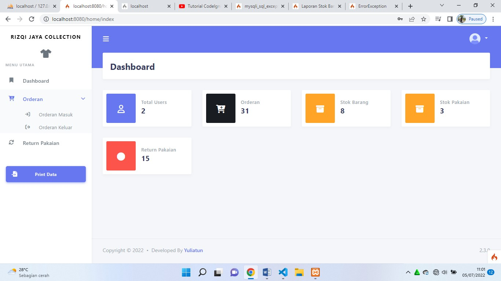
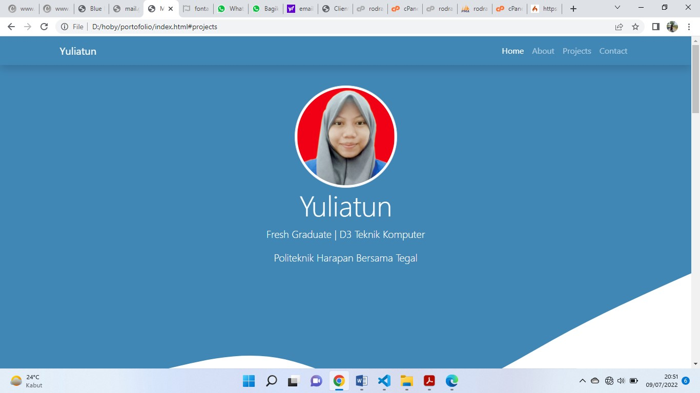

Fresh Graduate | D3 Teknik Komputer
Politeknik Harapan Bersama Tegal
Saya mahasiswi D3 Teknik Komputer Semester akhir di Politeknik Harapan Bersama Tegal. Sekarang saya sedang menunggu kelulusan/wisuda saya. sambil menunggu wisuda saya mencoba untuk mencari pekerjaan.
Saya tertarik di dunia pemrograman ,karena saya suka tantangan.selain itu juga saya orangnya penasaran akan sesuatau yang baru.jika saya sudah penasaran maka saya akan berusaha semaksimal mungkin mencari tentang hal yang membuat saya penasaran dan menemukan solusinya jika ada permasalahan.

Projek ini saya buat untuk projek Tugas Akhir saya. Di projek ini saya membuat sistem Inventory pada Rizqi Jaya Collection.
~ Framework Codeighniter versi 4
~ Framework Boostrap Stisla
note :
userID = kasir
userpassword = 123

Projek ini adalah projek portofolio saya yang anda buka sekarang.
~ Boostrap Versi 5